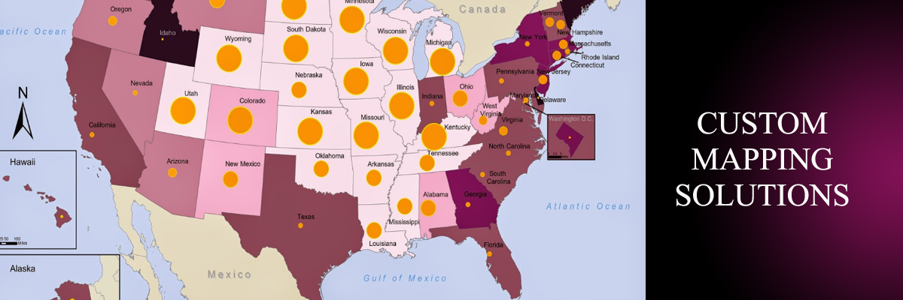
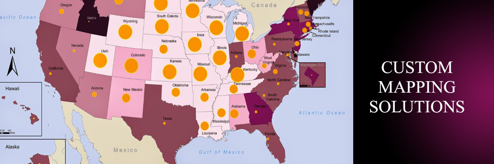
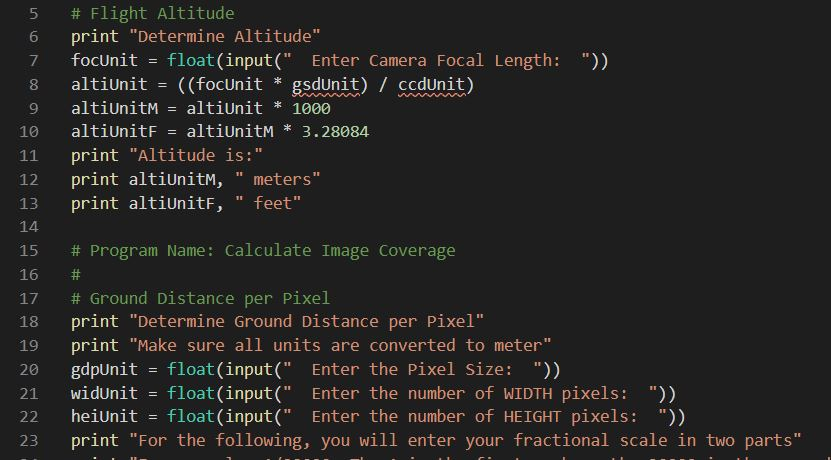
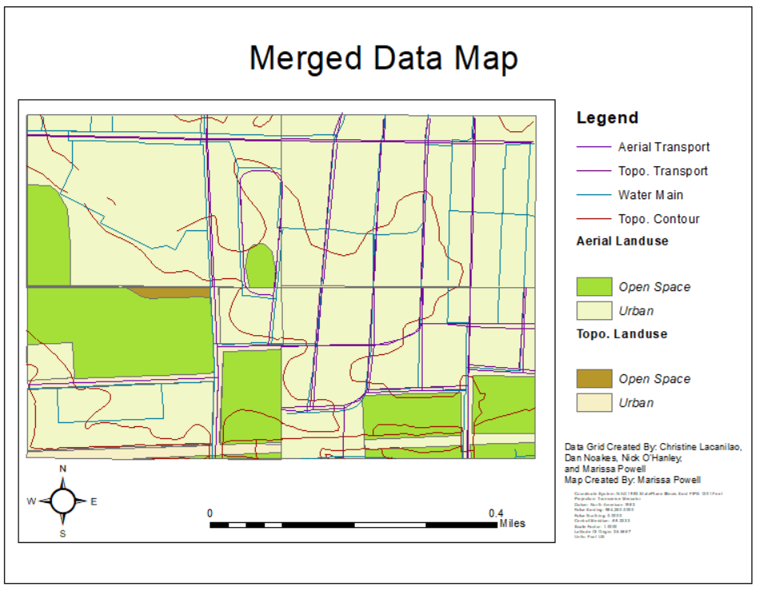

PROJECTS
Aerial Survey Flight Plan Program
Programming (Python)
Group 2 Consulting sucessfully created a program for flight planning an imaging survey. Goal is to create a program that:- Will obtain from the user the desired inputs: ground x,y coordinates, ground elevation, the scale of the photo, camera focal length, CCD Specifications, and the overlap between photos (the area photos share to create a seamless final image).
- Can calculate the aircraft’s altitude, the minimum number of desired flight lines (e.g. flight plans and planned routes), and the minimum number of photos to take.
- Then, produce a file containing the start and stop coordinates of each flight path/line.

Land Use Analysis
Spatial and Infrastructure Analysis
Group 2 conducted a land use analysis for a municipal organization. Group 2 Consulting is currently doing a follow-up project involving water pipe structure risk in relation to soil type, pipe material, and age.
